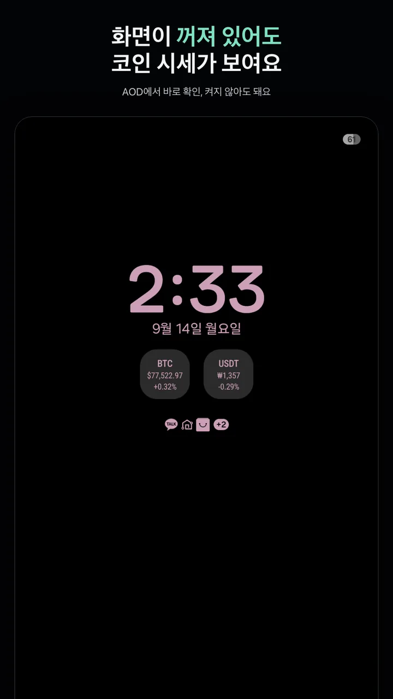
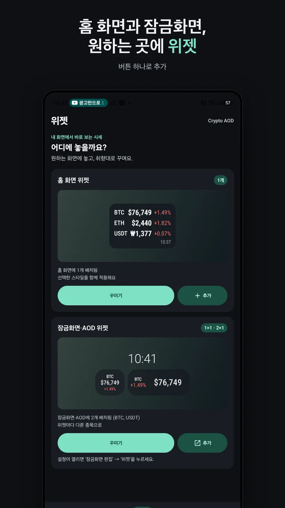
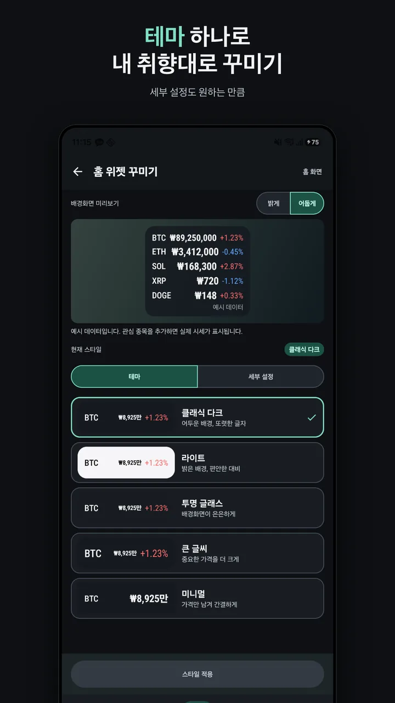
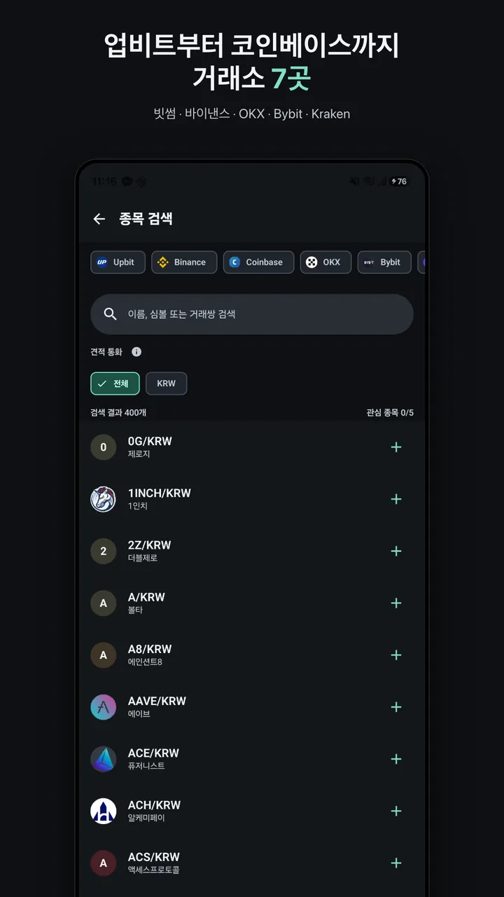
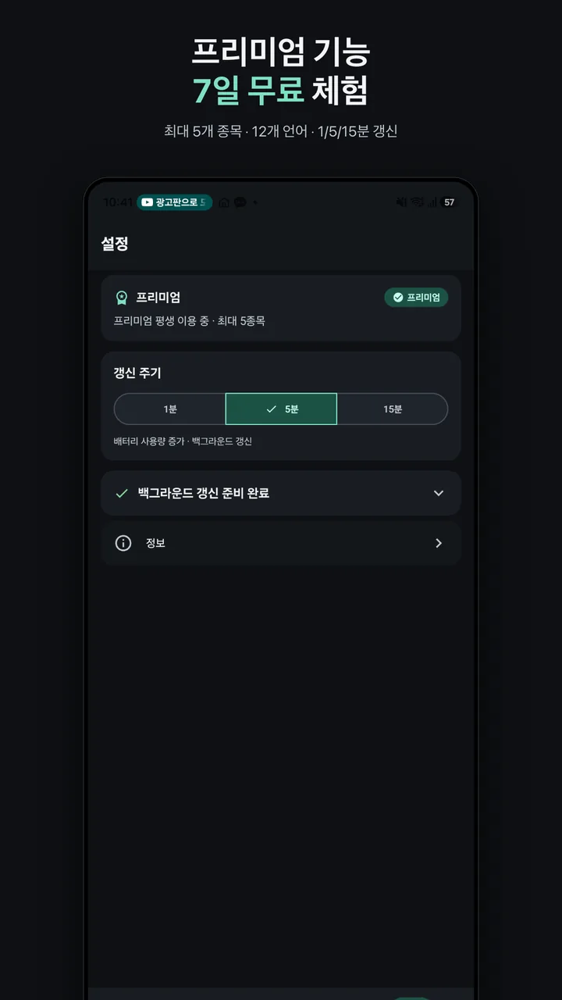

AOD·잠금화면
- 1×1·2×1 위젯, 종목마다 하나씩
- 화면이 꺼져 있어도 계속 갱신
- 갱신에 실패해도 마지막 시세와 시각을 유지
갤럭시 전용
화면이 꺼져 있어도 비트코인, 이더리움 시세가 보입니다. 잠금을 풀지 않아도, 앱을 열지 않아도 됩니다.

종목 추가: 거래소 7곳 중 하나를 고르고 이름이나 심볼로 검색합니다.
위젯 배치: 설정 → 잠금화면 및 AOD → 잠금화면 편집 → 위젯에서 추가하거나 홈 화면에 올립니다.
갱신 주기 선택: 1분·5분·15분. 위젯을 탭하면 바로 갱신됩니다.
잠금화면·AOD 위젯은 One UI 7 이상 갤럭시에서 동작합니다. 다른 안드로이드 폰에서는 홈 화면 위젯만 쓸 수 있습니다.




한 번 결제 ₩2,500 · 구독 없음
화면을 꺼도 보이는 코인 시세. 잠금화면·AOD·홈 화면 위젯으로 바로 확인하세요.